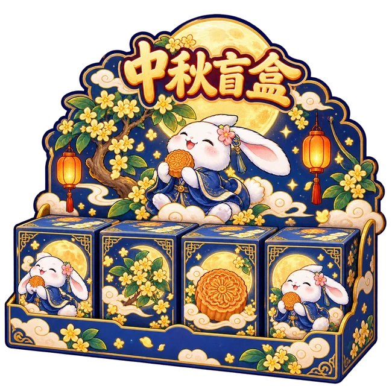

月下好礼
再开一局盲盒
兑换 1 张券，开启一小局 12 盒盲盒。
也可以先存着，等想玩时再用。
100 可用积分 / 张

月兔桂香
60 秒捞回三颗月亮
赢一张券，开一小局盲盒
盲盒券 0 张 · 可用积分 0累计积分 0
捞月赢券，也可用 100 积分兑换 1 张券。
月兔桂香
等钩子朝向月亮，再轻点放钩
月亮回船才计数 · 松钩会放回物品并收回空钩
月兔桂香
任选盲盒，集齐三个相同就获奖
这一小局已兑换；回首页或刷新都能继续。
月兔桂香 · 月下小铺
把攒下的好运，再拆成一份惊喜。
月下好礼
兑换 1 张券，开启一小局 12 盒盲盒。
也可以先存着，等想玩时再用。
100 可用积分 / 张
盲盒获奖同时增加累计积分与可用积分；兑换只消耗可用积分。券和积分保存在当前浏览器。
月兔桂香 · 月下手记
每一钩，都算数
详细成绩从本次更新起记录；暂停时间不计入用时，中途退出不计入已结算局。
把月色，慢慢收进图鉴
盲盒集齐三个相同并获奖，即收藏对应物品。重复获得会累计次数，旧版获奖记录自动计入。
本页进度未保存，刷新后将丢失新进度